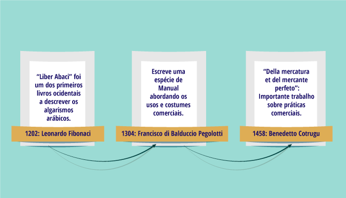
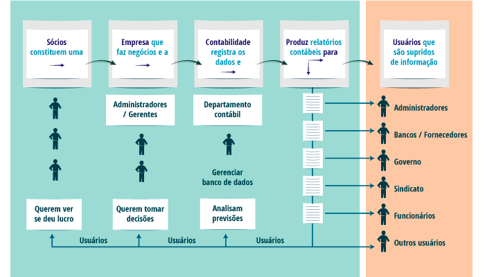
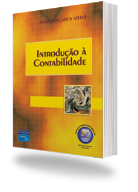

Fundamentos Contábeis
Unidade 1 | Aula 1

Disciplina | Fudamentos Contábeis

Explicar o conceito, as funções e quem são os usuários da Contabilidade.

Contabilidade; Usuários da Contabilidade; Funções da Contabilidade.
A Contabilidade, enquanto Ciência, é fundamentada por princípios e conceitos que levam ao objetivo principal: fornecer informações que apresentam, de forma estruturada e precisa, a posição patrimonial e os resultados econômico-financeiros de uma organização, proporcionando aos seus usuários os subsídios necessários para a tomada de decisões gerenciais.
Inicialmente, podemos definir Contabilidade como:
A principal ferramenta que proporciona informações fundamentais para a tomada de decisões dos seus usuários, devendo refletir fielmente a posição patrimonial, ou seja, a situação financeira e econômica, das entidades e organizações.
Desde a antiguidade as pessoas desenvolveram formas de registrar o montante de suas riquezas, com o intuito de mensurar as variações em colheitas, rebanhos, ou terras, por exemplo.
Alguns estudiosos afirmam que as formas mais primitivas de contagem existem desde 3 mil anos antes de Cristo.
Imagine a situação de um pastor ao tomar conta de seu rebanho, em uma época em que a escrita e os números ainda não existiam: certamente utilizava-se de pequenas pedras para auxiliar na contagem do número de animais, e com o passar de um ano, era possível verificar as variações na quantidade de ovelhas em seu rebanho.
As práticas comerciais, ao evoluírem com o passar dos séculos, tornaram-se importantes precursores para a Contabilidade Moderna. Padovezi (2018), menciona os principais estudos:
A Contabilidade Moderna teve seu início em 1494, com a publicação do tratado Tractatus de computis et scripturis, de Luca Pacioli, um frade matemático que desenvolveu a sistemática das partidas dobradas: para cada evento registrado, o mesmo deve ser representado por uma saída e por uma entrada de igual valor: “Para cada débito, deve existir um crédito correspondente”.

Enquanto Ciência, podemos delinear o objeto de estudo, objetivos e funções da Contabilidade como sendo:
Objeto de Estudo
O Patrimônio das entidades econômico-administrativas e suas variações são o seu objeto de estudo, tendo por base o registro dos fatos e eventos que venham a promover alterações.
Objetivos
Apurar e controlar os resultados dentro do exercício social, período-base estipulado pela legislação em vigor (artigo 175 da Lei 6.404/76), a fim de refletir com acuracidade o desempenho da entidade.
Funções da Contabilidade
As principais funções da Contabilidade são: capturar, registrar e interpretar todos os eventos que produzam alterações financeiras e econômicas das pessoas físicas e jurídicas, a fim de refletir, de forma fidedigna, a sua situação patrimonial, além de disponibilizar informações de forma estruturada aos usuários internos e externos da entidade para as mais diversas finalidades.
De uma forma sintética, a Contabilidade é a ciência que
tem como objeto de estudo o patrimônio das entidades.
Podemos sintetizar essas diversas funções em uma cadeia de eventos, como a demonstrada a seguir:
Ciclo da Contabilidade adaptado de Marion (2018)
As funções da contabilidade podem ser divididas em duas:
|
A primeira delas é relativa à administração dos recursos da entidade. Ao administrar bem, geram-se novos recursos em decorrência desse controle patrimonial. |
A segunda função é aquela que determina o lucro, ou seja, por meio das informações contábeis é que se verifica o quanto a entidade gerou ou não de resultado. |
A ênfase ao usuário da informação contábil defende que a Contabilidade é apresentada como algo útil para a tomada de decisões; atender aos usuários é o grande objetivo.
A sequência do processo contábil pode ser representada na imagem a seguir.

Basicamente, podemos classificar os principais usuários da Contabilidade em dois grandes grupos:
Internos
Formados pelos sócios ou proprietários e seus administradores, que utilizam as informações para elaborar as estratégias necessárias para o melhor direcionamento da organização.
Externos
Composto por usuários que necessitam das informações para utilizá-las para diversas finalidades, como os credores que buscam avaliar a segurança dos seus recursos aplicados junto à organização, ou os órgãos governamentais para verificar a tributação.
No leitura indicada, o autor Raimundo Athar traz de maneira breve, mas profunda, os conceitos de Contabilidade, sua função e também informações acerca dos usuários da contabilidade que o ajudará a fixar o conteúdo visto até aqui.
A Contabilidade, enquanto ofício, pode ser demandada tanto por pessoas físicas, como por pessoas jurídicas, ou seja, como Marion (2018) ressalta: “Considera-se pessoa, juridicamente falando, todo ser capaz de direitos e obrigações”.
Podemos definir dessa forma:
|
Pessoa Física |
Pessoa Jurídica |
|---|---|
|
Considera-se todo ser humano, pessoa natural, que possua direitos e obrigações legais junto a uma sociedade. |
Composta pela união de Pessoas Físicas que, por possuírem o mesmo objetivo, estabelecem, através da celebração de um ato jurídico, a composição de uma nova pessoa, com personalidade jurídica distinta dos seus membros. |
Os objetivos que dão origem a essa nova personalidade jurídica podem ser a obtenção de lucros (fins lucrativos), como é o caso das indústrias e empresas comerciais, ou ainda serem objetivos diversos, como as associações culturais e religiosas, por exemplo
Cabe ressaltar que a Pessoa Jurídica pode ser composta por um grupo de pessoas físicas, por grupo de pessoas jurídicas, ou por um grupo misto composto por ambos, chamados de acionistas. No Mercado de Capitais, a empresa de capital aberto tem por vezes uma composição de acionistas complexa.
Vejamos a composição da Vale S.A., principal mineradora do Brasil:

É de grande relevância ressaltar a importância da chamada Entidade Contábil. Uma vez constituída, a pessoa jurídica passa a ter uma personalidade única, detendo direitos e obrigações e devendo ser tratada com autonomia patrimonial, ou seja, não se pode confundir o seu patrimônio com o dos sócios e acionistas.
Podemos, assim, definir a Entidade Contábil como
um dos pilares básicos da chamada teoria contábil.
O segundo pilar fundamental da Contabilidade é a Continuidade da Empresa, pois uma vez constituída, aplica-se o pressuposto de que a mesma exercerá suas atividades por tempo indeterminado, devendo ser efetuados os registros contábeis dos fatos e eventos que promovam as variações em seus patrimônios.
IUDÍCIBUS, Sérgio. Contabilidade introdutória. Equipe de professores da Faculdade de Economia, Administração e Contabilidade da USP. 11. ed. São Paulo: Atlas, 2010.
MARION, José Carlos. Contabilidade básica. 12. ed. São Paulo: Atlas, 2018.
Introdução à Contabilidade | Raimundo Aben Athar
➜ Capítulo 1. Contabilidade, uma equação de fácil solução, p. 1-6Durante a leitura, atente-se às equações apresentadas didaticamente pelo autor, que representam a origem e o destino do patrimônio da entidade.

Contabilidade: aspectos relevantes da epopéia de sua evolução | Sérgio de Iudícibus et al.
Neste artigo você vai encontrar conceitos de accountability, conhecer o frei matemático Luca Pacioli, criador do método das partidas dobradas, além de aprofundar toda a sua visão sobre a ciência contábil. Esse artigo foi escrito pelos principais nomes da Contabilidade brasileira: Professores Sérgio de Iudícibus, Eliseu Martins e Nelson Carvalho. Todas grandes referências na educação e pesquisa contábil.
Gráfico da Vale. Disponível em: <http://www.vale.com/brasil/PT/investors/company/shareholding-structure/Paginas/default.aspx>. Acesso em: Setembro/2019.
Artigo "Contabilidade: aspectos relevantes da epopéia de sua evolução". Disponível em: <http://www.revistas.usp.br/rcf/article/view/34155>. Acesso em: Setembro/2019.
Copyright©2021, Faculdade OPEN. Todos os direitos reservados.
É proibida a reprodução e distribuição total ou parcial deste material, com ou sem fins lucrativos, em qualquer meio, sem prévia autorização.